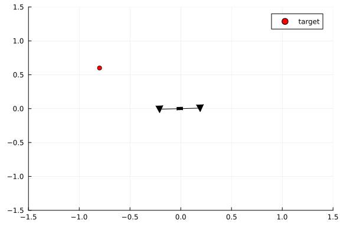
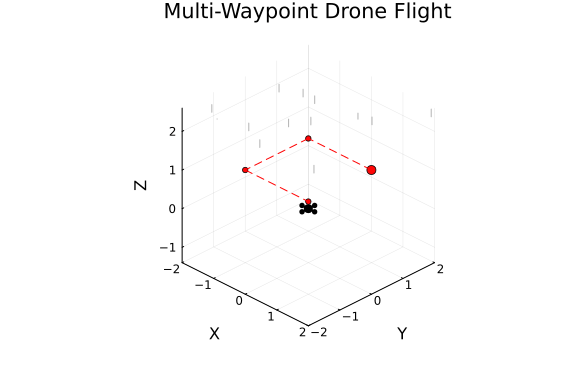

This example was automatically generated from a Jupyter notebook in the RxInferExamples.jl repository.
We welcome and encourage contributions! You can help by:
- Improving this example
- Creating new examples
- Reporting issues or bugs
- Suggesting enhancements
Visit our GitHub repository to get started. Together we can make RxInfer.jl even better! 💪
Drone Dynamics
Note: These examples demonstrate the use of RxInfer for motion planning. The animations show the inferred trajectories from probabilistic inference, rather than simulated executions. For more realistic simulations, especially in the 3D drone example, the model would need to be extended with a reactive environment that responds to the drone's actions during plan execution. If you're interested in collaborating on a more realistic implementation, please open a discussion and let's work on it together!
using RxInfer, LinearAlgebra
Defining structures
"""
Environment(; gravitational_constant::Float64 = 9.81)
This structure contains the properties of the environment.
"""
Base.@kwdef struct Environment
gravitational_constant::Float64 = 9.81
end
get_gravity(env::Environment) = env.gravitational_constant
get_gravity (generic function with 1 method)"""
Drone(mass, inertia, radius, force_limit)
This structure contains the properties of the drone.
"""
Base.@kwdef struct Drone
mass::Float64
inertia::Float64
radius::Float64
force_limit::Float64
end
get_mass(drone::Drone) = drone.mass
get_properties(drone::Drone) = (drone.mass, drone.inertia, drone.radius, drone.force_limit)
get_properties (generic function with 1 method)"""
State(x, y, vx, vy, 𝜃, 𝜔)
This structure contains the state of the drone. It contains the position, velocity, and orientation of the drone.
"""
struct State
x::Float64
y::Float64
vx::Float64
vy::Float64
𝜃::Float64
𝜔::Float64
end
get_state(state::State) = (state.x, state.y, state.vx, state.vy, state.𝜃, state.𝜔)
get_state (generic function with 1 method)Model specification
"""
state_transition(state, actions, drone, environment, dt)
This function computes the next state of the drone given the current state, the actions, the drone properties and the environment properties.
"""
function state_transition(state, actions, drone::Drone, environment::Environment, dt)
# extract drone properties
m, I, r, limit = get_properties(drone)
# extract environment properties
g = get_gravity(environment)
# extract feasible actions
Fl, Fr = clamp.(actions, 0, limit)
# extract state properties
x, y, vx, vy, θ, ω = state
# compute forces and torques
Fg = m * g
Fy = (Fl + Fr) * cos(θ) - Fg
Fx = (Fl + Fr) * sin(θ)
𝜏 = (Fl - Fr) * r
# compute movements
ax = Fx / m
ay = Fy / m
vx_new = vx + ax * dt
# vy_new = vx + ay * dt # old version
vy_new = vy + ay * dt # new version
x_new = x + vx * dt + ax * dt^2 / 2
y_new = y + vy * dt + ay * dt^2 / 2
# compute rotations
α = 𝜏 / I
ω_new = ω + α * dt
θ_new = θ + ω * dt + α * dt^2 / 2
return [x_new, y_new, vx_new, vy_new, θ_new, ω_new]
end
Main.var"##WeaveSandBox#277".state_transition@model function drone_model(drone, environment, initial_state, goal, horizon, dt)
# extract environment properties
g = get_gravity(environment)
# extract drone properties
m = get_mass(drone)
# initial state prior
s[1] ~ MvNormal(mean = initial_state, covariance = 1e-5 * I)
for i in 1:horizon
# prior on actions (mean compensates for gravity)
u[i] ~ MvNormal(μ = [m * g / 2, m * g / 2], Σ = diageye(2))
# state transition
s[i + 1] ~ MvNormal(
μ = state_transition(s[i], u[i], drone, environment, dt),
Σ = 1e-10 * I
)
end
s[end] ~ MvNormal(mean = goal, covariance = 1e-5 * diageye(6))
end
Probabilistic inference
@meta function drone_meta()
# approximate the state transition function using the Unscented transform
state_transition() -> Unscented()
end
drone_meta (generic function with 1 method)function move_to_target(drone::Drone, env::Environment, start::State, target, horizon, dt)
results = infer(
model = drone_model(
drone = drone,
environment = env,
horizon = horizon,
dt = dt
),
data = (
initial_state = collect(get_state(start)),
goal = [target[1], target[2], 0, 0, 0, 0],
),
meta = drone_meta(),
returnvars = (s = KeepLast(), u = KeepLast())
)
return results
end
move_to_target (generic function with 1 method)drone = Drone(
mass = 1,
inertia = 1,
radius = 0.2,
force_limit = 15.0
)
env = Environment()
start = State(0.0, 0.0, 0.0, 0.0, 0.0, 0.0)
target = [-0.8, 0.6]
results = move_to_target(drone, env, start, target, 40, 0.05)
Inference results:
Posteriors | available for (s, u)Plotting
using Plots
function plot_drone!(p, drone::Drone, state::State; color = :black)
x, y, x_a, y_a, θ, ω = get_state(state)
_, _, radius, _ = get_properties(drone)
dx = radius * cos(θ)
dy = radius * sin(θ)
drone_position = [ x ], [ y ]
drone_engines = [ x - dx, x + dx ], [ y + dy, y - dy ]
drone_coordinates = [ x - dx, x, x + dx ], [ y + dy, y, y - dy ]
rotation_matrix = [ cos(-θ) -sin(-θ); sin(-θ) cos(-θ) ]
engine_shape = [ -1 0 1; 1 -1 1 ]
drone_shape = [ -2 -2 2 2 ; -1 1 1 -1 ]
engine_shape = rotation_matrix * engine_shape
drone_shape = rotation_matrix * drone_shape
engine_marker = Shape(engine_shape[1, :], engine_shape[2, :])
drone_marker = Shape(drone_shape[1, :], drone_shape[2, :])
scatter!(p, drone_position[1], drone_position[2]; color = color, label = false, marker = drone_marker)
scatter!(p, drone_engines[1], drone_engines[2]; color = color, label = false, marker = engine_marker, ms = 10)
plot!(p, drone_coordinates; color = color, label = false)
return p
end
plot_drone! (generic function with 1 method)function animate_drone(drone::Drone, target, results::InferenceResult)
states = hcat(map(p -> mean(p), results.posteriors[:s])...)
animation = @animate for k in 1:size(states,2)
# plot target
p = scatter([target[1]], [target[2]], label = "target"; color = :red)
# plot drone
plot_drone!(p, drone, State(states[:, k]...))
xlims!(-1.5, 1.5)
ylims!(-1.5, 1.5)
end
gif(animation, "drone.gif", show_msg = false)
nothing
end
animate_drone (generic function with 1 method)animate_drone(drone, target, results)

let
inferred_angle_mean = map(p -> mean(p)[5], results.posteriors[:s])
inferred_angle_std = map(p -> std(p)[5], results.posteriors[:s])
plot(inferred_angle_mean; ribbon = inferred_angle_std, fillalpha = 0.2, label = "inferred angle", size=(600,300))
end

let
inferred_forces_mean = hcat(map(p -> mean(p), results.posteriors[:u])...)'
inferred_forces_std = hcat(map(p -> sqrt.(var(p)), results.posteriors[:u])...)'
plot(inferred_forces_mean[:,1]; ribbon = inferred_forces_std[:,1], fillalpha = 0.2, label = "Fl", size=(600,300))
plot!(inferred_forces_mean[:,2]; ribbon = inferred_forces_std[:,2], fillalpha = 0.2, label = "Fr", size=(600,300))
hline!([get_mass(drone) * get_gravity(env) / 2], label = "Fg/2")
end

3D Drone Extension
This section extends our 2D drone model into three-dimensional space, allowing for full spatial navigation. The model includes:
- 6 degrees of freedom (position and orientation)
- Four-motor configuration
- Basic aerodynamic forces
Note: This implementation is a simplified model intended for educational purposes. While it captures the fundamental dynamics of a quadcopter, it omits advanced aerodynamic effects and motor dynamics for clarity.
# Extended Drone structure for 4 motors
Base.@kwdef struct Drone3D
mass::Float64
inertia::Matrix{Float64} # 3x3 inertia matrix
radius::Float64
arm_length::Float64
force_limit::Float64
end
Main.var"##WeaveSandBox#277".Drone3Dfunction get_properties(drone::Drone3D)
return (
drone.mass,
drone.inertia,
drone.radius,
drone.arm_length,
drone.force_limit
)
end
get_properties (generic function with 2 methods)# Extended State for 3D
struct State3D
x::Float64 # position
y::Float64
z::Float64
vx::Float64 # velocity
vy::Float64
vz::Float64
ϕ::Float64 # roll
θ::Float64 # pitch
ψ::Float64 # yaw
ωx::Float64 # angular velocity
ωy::Float64
ωz::Float64
end
function get_state(state::State3D)
return (
state.x, state.y, state.z,
state.vx, state.vy, state.vz,
state.ϕ, state.θ, state.ψ,
state.ωx, state.ωy, state.ωz
)
end
get_state (generic function with 2 methods)"""
rotation_matrix(ψ, θ, ϕ)
Create a 3D rotation matrix from yaw (ψ), pitch (θ), and roll (ϕ) angles.
"""
function rotation_matrix(ψ, θ, ϕ)
# Rotation matrices for each axis
Rz = [cos(ψ) -sin(ψ) 0;
sin(ψ) cos(ψ) 0;
0 0 1]
Ry = [cos(θ) 0 sin(θ);
0 1 0;
-sin(θ) 0 cos(θ)]
Rx = [1 0 0;
0 cos(ϕ) -sin(ϕ);
0 sin(ϕ) cos(ϕ)]
# Combined rotation matrix (ZYX order)
return Rz * Ry * Rx
end
Main.var"##WeaveSandBox#277".rotation_matrix"""
state_transition_3d(state, actions, drone, environment, dt)
Compute the next state of the 3D drone given current state and four motor forces.
"""
function state_transition_3d(state, actions, drone::Drone3D, environment::Environment, dt)
# Extract properties
m, I, r, L, limit = get_properties(drone)
g = get_gravity(environment)
# Clamp motor forces
F1, F2, F3, F4 = clamp.(actions, 0, limit)
# Extract state
x, y, z, vx, vy, vz, ϕ, θ, ψ, ωx, ωy, ωz = state
# Current rotation matrix
R = rotation_matrix(ψ, θ, ϕ)
# Total thrust force in body frame
F_total = sum([F1, F2, F3, F4])
# Compute torques
τx = L * (F2 - F4) # roll torque
τy = L * (F1 - F3) # pitch torque
τz = (F1 + F3 - F2 - F4) * r # yaw torque
# Forces in world frame
F_world = R * [0, 0, F_total]
# Accelerations
ax = F_world[1] / m
ay = F_world[2] / m
az = F_world[3] / m - g
# Angular accelerations
α = I \ ([τx, τy, τz] - cross([ωx, ωy, ωz], I * [ωx, ωy, ωz]))
# Update velocities
vx_new = vx + ax * dt
vy_new = vy + ay * dt
vz_new = vz + az * dt
# Update positions
x_new = x + vx * dt + ax * dt^2 / 2
y_new = y + vy * dt + ay * dt^2 / 2
z_new = z + vz * dt + az * dt^2 / 2
# Update angular velocities
ωx_new = ωx + α[1] * dt
ωy_new = ωy + α[2] * dt
ωz_new = ωz + α[3] * dt
# Update angles
ϕ_new = ϕ + ωx * dt + α[1] * dt^2 / 2
θ_new = θ + ωy * dt + α[2] * dt^2 / 2
ψ_new = ψ + ωz * dt + α[3] * dt^2 / 2
return [
x_new, y_new, z_new,
vx_new, vy_new, vz_new,
ϕ_new, θ_new, ψ_new,
ωx_new, ωy_new, ωz_new
]
end
Main.var"##WeaveSandBox#277".state_transition_3d@model function drone_model_3d(drone, environment, initial_state, goal, horizon, dt)
# Extract properties
g = get_gravity(environment)
m = drone.mass
# Initial state prior
s[1] ~ MvNormal(mean = initial_state, covariance = 1e-5 * I)
for i in 1:horizon
# Prior on motor actions (mean compensates for gravity)
hover_force = m * g / 4
u[i] ~ MvNormal(μ = [hover_force, hover_force, hover_force, hover_force], Σ = diageye(4))
# State transition
s[i + 1] ~ MvNormal(
μ = state_transition_3d(s[i], u[i], drone, environment, dt),
Σ = 1e-10 * I
)
end
s[end] ~ MvNormal(mean = goal, covariance = 1e-5 * diageye(12))
end
@meta function drone_meta_3d()
state_transition_3d() -> Unscented()
end
drone_meta_3d (generic function with 1 method)function move_to_target_3d(drone::Drone3D, env::Environment, start::State3D, target, horizon, dt)
results = infer(
model = drone_model_3d(
drone = drone,
environment = env,
horizon = horizon,
dt = dt
),
data = (
initial_state = collect(get_state(start)),
goal = [target[1], target[2], target[3], 0, 0, 0, 0, 0, 0, 0, 0, 0],
),
meta = drone_meta_3d(),
returnvars = (s = KeepLast(), u = KeepLast())
)
return results
end
move_to_target_3d (generic function with 1 method)function move_through_waypoints(drone::Drone3D, env::Environment, start::State3D, waypoints, steps_per_segment=40, dt=0.05)
current_state = start
all_results = []
all_states = []
# Move through each waypoint
for (i, target) in enumerate(waypoints)
println("Moving to waypoint $i: $target")
# Get results for this segment
results = move_to_target_3d(drone, env, current_state, target, steps_per_segment, dt)
push!(all_results, results)
# Extract final state for next segment
final_states = hcat(map(p -> mean(p), results.posteriors[:s])...)
final_state = State3D(final_states[:, end]...)
push!(all_states, final_states)
# Update current state
current_state = final_state
end
# Combine all states for animation
combined_states = hcat(all_states...)
return combined_states, waypoints
end
move_through_waypoints (generic function with 3 methods)# Visualization function for 3D drone
function plot_drone_3d!(p, drone::Drone3D, state::State3D; color=:black)
x, y, z, _, _, _, ϕ, θ, ψ, _, _, _ = get_state(state)
_, _, radius, arm_length, _ = get_properties(drone)
# Create rotation matrix
R = rotation_matrix(ψ, θ, ϕ)
# Define arm endpoints in body frame (relative to center)
arm_endpoints = [
[arm_length, 0, 0], # Right arm (X configuration)
[0, arm_length, 0], # Front arm
[-arm_length, 0, 0], # Left arm
[0, -arm_length, 0] # Back arm
]
# Transform arm endpoints to world frame
world_endpoints = []
for endpoint in arm_endpoints
# Convert endpoint to column vector for matrix multiplication
endpoint_vec = reshape(endpoint, :, 1)
# Apply rotation and translation
world_point = R * endpoint_vec + [x, y, z]
push!(world_endpoints, vec(world_point))
end
# Plot center
scatter!(p, [x], [y], [z], color=color, label=false, markersize=5)
# Plot arms and motors
for endpoint in world_endpoints
# Draw arm
plot!(p, [x, endpoint[1]], [y, endpoint[2]], [z, endpoint[3]],
color=color, label=false, linewidth=2)
# Draw motor
scatter!(p, [endpoint[1]], [endpoint[2]], [endpoint[3]],
color=color, label=false, markersize=3)
end
end
plot_drone_3d! (generic function with 1 method)function animate_drone_3d_multi(drone::Drone3D, states, targets; fps=30)
# Note: The rain animation is purely for visualization aesthetics
# and does not affect the drone's dynamics or trajectory planning
# Create initial rain streaks
function generate_raindrops(n=50)
x = 4 * rand(n) .- 2 # range [-2, 2]
y = 4 * rand(n) .- 2
z1 = 2 .+ 4 * rand(n) # start higher up to have some offscreen
z2 = z1 .- 0.3 # fixed length rain streaks
return (x, y, z1, z2)
end
# Initialize raindrops
raindrops = generate_raindrops()
# Determine dynamic plot bounds based on states and targets
x_vals = [states[1,:]; [t[1] for t in targets]]
y_vals = [states[2,:]; [t[2] for t in targets]]
z_vals = [states[3,:]; [t[3] for t in targets]]
x_min, x_max = minimum(x_vals) - 0.5, maximum(x_vals) + 0.5
y_min, y_max = minimum(y_vals) - 0.5, maximum(y_vals) + 0.5
z_min, z_max = minimum(z_vals) - 0.5, maximum(z_vals) + 0.5
# Ensure the plot window is at least 4x4x4 for good visualization
x_range = max(x_max - x_min, 4.0)
y_range = max(y_max - y_min, 4.0)
z_range = max(z_max - z_min, 4.0)
# Center the plot window
x_center = (x_min + x_max) / 2
y_center = (y_min + y_max) / 2
z_center = (z_min + z_max) / 2
x_min, x_max = x_center - x_range/2, x_center + x_range/2
y_min, y_max = y_center - y_range/2, y_center + y_range/2
z_min, z_max = z_center - z_range/2, z_center + z_range/2
animation = @animate for k in 1:size(states,2)
# Update raindrop positions
fall_speed = 0.1
z1 = raindrops[3] .- fall_speed
z2 = raindrops[4] .- fall_speed
# Regenerate raindrops that have fallen below view
below_view = findall(z2 .<= z_min)
if !isempty(below_view)
new_drops = generate_raindrops(length(below_view))
raindrops[1][below_view] = new_drops[1]
raindrops[2][below_view] = new_drops[2]
z1[below_view] = new_drops[3]
z2[below_view] = new_drops[4]
end
# Update raindrops state
raindrops = (raindrops[1], raindrops[2], z1, z2)
p = plot3d(
xlims=(x_min, x_max), ylims=(y_min, y_max), zlims=(z_min, z_max),
xlabel="X", ylabel="Y", zlabel="Z",
camera=(45, 30),
title="Multi-Waypoint Drone Flight",
background=:white
)
# Draw rain streaks
for i in 1:length(raindrops[1])
if raindrops[4][i] > z_min # only draw if in view
plot!(p, [raindrops[1][i], raindrops[1][i]],
[raindrops[2][i], raindrops[2][i]],
[raindrops[3][i], raindrops[4][i]],
color=:grey,
linestyle=:dash,
alpha=0.6,
legend=false,
linewidth=1)
end
end
# Plot all targets
for (i, target) in enumerate(targets)
scatter!(p, [target[1]], [target[2]], [target[3]],
label=i == 1 ? "waypoints" : false,
color=:red,
markersize=i == 1 ? 5 : 3)
# Connect waypoints with lines
if i > 1
prev_target = targets[i-1]
plot!(p, [prev_target[1], target[1]],
[prev_target[2], target[2]],
[prev_target[3], target[3]],
color=:red, linestyle=:dash, label=false, linewidth=1)
end
end
# Plot drone
if size(states, 1) >= 12 # Make sure we have all 12 components for State3D
current_state = State3D(states[:, k]...)
plot_drone_3d!(p, drone, current_state)
else
# If we don't have enough state components, just plot a point at the position
scatter!(p, [states[1,k]], [states[2,k]], [states[3,k]],
color=:black, markersize=4, label=false)
end
# Add trajectory trace (last 100 points)
trace_start = max(1, k-100)
if k > 1
plot!(p, states[1,trace_start:k], states[2,trace_start:k], states[3,trace_start:k],
color=:blue, label=false, linewidth=1, linealpha=0.5)
end
end
gif(animation, "drone_3d_multi.gif", fps=fps, show_msg = false)
nothing
end
animate_drone_3d_multi (generic function with 1 method)# Create drone instance
drone_3d = Drone3D(
mass = 1.0,
inertia = diagm([0.1, 0.1, 0.15]), # 3×3 diagonal inertia matrix
radius = 0.1,
arm_length = 0.2,
force_limit = 15.0
)
env = Environment()
# Initial state
start = State3D(
0.0, 0.0, 0.0, # position (x, y, z)
0.0, 0.0, 0.0, # velocity (vx, vy, vz)
0.0, 0.0, 0.0, # orientation (ϕ, θ, ψ)
0.0, 0.0, 0.0 # angular velocity (ωx, ωy, ωz)
)
# Define a sequence of waypoints for a square pattern
waypoints = [
[1.0, 1.0, 1.0], # Front-right corner
[-1.0, 1.0, 1.0], # Front-left corner
[-1.0, -1.0, 1.0], # Back-left corner
[1.0, -1.0, 1.0], # Back-right corner
[0.0, 0.0, 0.0] # Land at center
]
# Run simulation through all waypoints
combined_states, targets = move_through_waypoints(drone_3d, env, start, waypoints);
Moving to waypoint 1: [1.0, 1.0, 1.0]
Moving to waypoint 2: [-1.0, 1.0, 1.0]
Moving to waypoint 3: [-1.0, -1.0, 1.0]
Moving to waypoint 4: [1.0, -1.0, 1.0]
Moving to waypoint 5: [0.0, 0.0, 0.0]animate_drone_3d_multi(drone_3d, combined_states, targets)

This example was automatically generated from a Jupyter notebook in the RxInferExamples.jl repository.
We welcome and encourage contributions! You can help by:
- Improving this example
- Creating new examples
- Reporting issues or bugs
- Suggesting enhancements
Visit our GitHub repository to get started. Together we can make RxInfer.jl even better! 💪
This example was executed in a clean, isolated environment. Below are the exact package versions used:
For reproducibility:
- Use the same package versions when running locally
- Report any issues with package compatibility
Status `/tmp/jl_BKMWxI/Project.toml`
[91a5bcdd] Plots v1.41.7
[86711068] RxInfer v5.5.2
[37e2e46d] LinearAlgebra v1.12.0